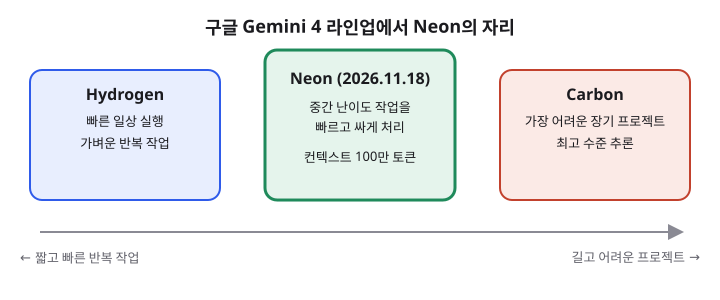
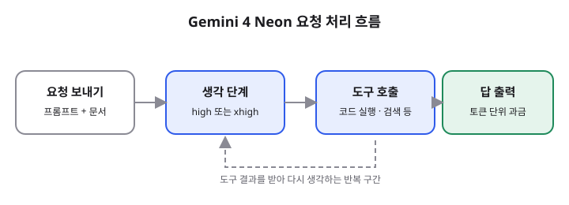

Gemini 4 Neon: 카고 트럭과 승용차 사이, 구글의 새 중간 등급 모델
- 구글이 2026년 11월 18일 Gemini 4 Neon을 공개했고, 개발자용 API와 AI Studio에서 바로 쓸 수 있습니다.
- 입력 100만 토큰당 3달러, 출력 100만 토큰당 15달러이며 컨텍스트는 100만 토큰입니다. 생각 깊이를 4단계로 고를 수 있습니다.
- 입문 개발자에게는 "매일 쓰는 에이전트 작업을 적당한 비용으로 돌리는 기본 모델"이 생겼다는 뜻입니다. 무조건 가장 똑똑한 모델을 고를 필요가 없어졌습니다.
구글 모델 이름에 Carbon, Hydrogen, Argon 같은 원소 이름이 붙기 시작했습니다. 이번에는 Neon입니다. 개발자 커뮤니티에서는 "가격과 성능의 균형이 좋은 중간 모델이 나왔다"는 반응이 많았습니다. 다만 구글이 발표한 벤치마크 수치는 대부분 구글이나 평가 기관이 직접 측정한 값이라, 실제 프로젝트에서는 직접 한 번 돌려 보는 것이 중요합니다.
01한눈에 보기
모델 라인업을 택배 회사에 비유해 봅시다. Carbon은 며칠씩 걸리는 장거리 대형 화물을 맡는 트럭입니다. Hydrogen은 시내를 빠르게 도는 소형 배송 차량이고, 구글 발표에 따르면 평소 반복되는 가벼운 실행 작업에 맞춰져 있습니다. Neon은 그 사이의 승용차입니다. 구글은 Neon을 "복잡한 소프트웨어 작업, 지식 노동, 과학 작업을 높은 수준으로, 그러나 더 빠르고 싸게 끝내는 모델"로 소개했습니다. 자주 반복되는 중간 난이도 작업을 맡기기에 적합하다는 설명입니다.

사고 단계(thinking level): 답을 내기 전에 모델이 속으로 생각하는 시간을 얼마나 쓸지 정하는 설정입니다. 시험 문제에 시간을 더 쓰는 것과 비슷합니다.
캐시된 입력: 같은 긴 문서를 반복해서 보낼 때 이미 읽어 둔 부분을 싸게 재사용하는 기능입니다.
02어떻게 동작하나요
개발자가 프롬프트와 문서를 보내면 모델은 먼저 내부에서 생각하는 단계를 거칩니다. 이때 사고 단계를 낮음부터 높음까지 골라 쓸 수 있는데, 구글 발표는 기본값이 high이고 그보다 더 깊게 생각하는 xhigh가 있다고 밝혔습니다. 생각을 많이 할수록 정확도는 올라가지만 토큰 사용량과 비용도 함께 늘어납니다. 모델이 답을 내면서 도구를 호출하거나 코드를 실행하는 에이전트 작업도 같은 API 안에서 처리됩니다.

03왜 지금 화제인가요
Neon은 2026년 11월 18일에 공개됐습니다. 발표 직후 여러 IT 매체와 요약 사이트가 가격과 벤치마크를 함께 정리했고, 개발자들은 특히 "Carbon보다 싸면서 Claude Opus 5.5, GPT-6.2 Sol과 비교되는 성능"이라는 구도에 주목했습니다. 구글은 Neon을 Antigravity(구글의 에이전트 코딩 도구)와 Gemini 앱에도 함께 붙여 내놓았습니다.
04관련 나라·기업
| 구분 | 이름 | 어떤 관련이 있나 |
|---|---|---|
| 기업 | Google (Google DeepMind) | Neon을 개발해 Gemini API, AI Studio, Antigravity, Gemini 앱으로 공급합니다. |
| 기업 | OpenAI, Anthropic | 구글이 성능 비교 대상으로 제시한 경쟁 모델(GPT-6.2 Sol, Claude Opus 5.5) 제공사입니다. |
| 나라 | 미국 | Google은 미국 기업이며, 발표 자료와 가격 정책도 미국 기준으로 작성됐습니다. |
05기존 방식과 무엇이 다른가
아래 표는 구글이 발표 자료에서 밝힌 내용만 정리했습니다. 비교 대상은 같은 구글의 Carbon입니다.
| 비교 항목 | Gemini 4 Carbon | Gemini 4 Neon |
|---|---|---|
| 용도 | 가장 어려운 장기 프로젝트 | 복잡하지만 자주 반복되는 작업을 빠르게 |
| 작업당 비용 | 기준 | 높은 사고 단계 기준 약 32% 낮다고 구글이 밝힘 |
| 입력 가격 | 구글 발표 자료 기준 확인 필요 | 100만 토큰당 3달러 (캐시 입력 0.15달러) |
| 출력 가격 | 구글 발표 자료 기준 확인 필요 | 100만 토큰당 15달러 |
다만 Carbon과 Neon의 품질을 직접 비교한 자료는 구글 발표에 없었습니다. 그래서 "Neon이 Carbon을 대체한다"고 단정하기보다는, 작업의 난이도에 따라 두 모델을 나눠 쓰는 방식으로 이해하는 편이 안전합니다.
06직접 해 보기
입문 개발자라면 코드를 쓰기 전에 AI Studio에서 먼저 체험해 보는 것을 권합니다. 구글 발표에 따르면 Neon은 AI Studio의 유료 계층과 Gemini API에서 제공됩니다. 공식 문서에서 확인한 모델 ID와 호출 코드는 이 글에 아직 싣지 않았으니, 아래 단계로 직접 확인해 보세요.
1. AI Studio에서 모델 목록 확인
AI Studio에 로그인해 모델 선택 목록에서 Neon이 보이는지 확인합니다. 보이지 않으면 아직 내 계정에 열리지 않은 것입니다.
2. 같은 질문을 두 가지 사고 단계로 비교
하나의 코딩 문제를 high와 xhigh로 각각 돌려 보고, 답의 차이와 사용한 토큰 수를 적어 봅니다. 비용과 정확도의 관계를 직접 느끼는 가장 빠른 방법입니다.
3. 공식 문서의 API 예제 따라 하기
Gemini API 문서에서 모델 ID와 Python 또는 JavaScript 예제를 찾아, 그 예제를 그대로 실행해 보세요. 예제를 확인한 뒤에 내 코드로 옮기는 순서가 안전합니다.
07주의할 점과 한계
- 벤치마크 수치는 대부분 구글이 보고한 값이거나 평가 기관이 측정한 값입니다. 같은 조건에서 여러분의 작업으로 직접 재 보기 전에는 단정하기 어렵습니다.
- 사고 단계를 xhigh로 올리면 정확도가 오를 수 있지만, 같은 작업의 토큰 사용량과 비용도 함께 늘어납니다. 여러 매체는 이 비용 차이를 강조했지만, 수치 계산 방식은 출처마다 달라 직접 확인이 필요합니다.
- 사이버 보안용 Neon 변형은 신뢰받는 방어 연구자를 대상으로 한 Fairwind 프로그램에서만 우선 열립니다. 일반 개발자는 접근이 제한될 수 있습니다.
- 구글은 안전 장치 때문에 일부 작업이 거절될 수 있다고 밝혔습니다. 예를 들어 Terminal-Bench 4.0에서는 약 2%의 작업이 거절됐다고 설명했습니다.
- 일부 매체는 가격 인하 시점과 캐시 가격 할인율 등을 다르게 적었습니다. 결제 전에는 반드시 구글의 가격 페이지에서 최신 값을 확인하세요.
08정리
Gemini 4 Neon은 "가장 똑똑한 모델"보다 "자주 쓰기 좋은 모델"을 목표로 한 발표입니다. 입문 개발자에게 중요한 것은 모델 이름보다 가격, 컨텍스트 길이, 사고 단계 같은 조절 장치를 이해하는 일입니다.
오늘 해 볼 일은 간단합니다. AI Studio에서 같은 문제를 두 가지 사고 단계로 돌려 보고, 답과 비용을 기록해 보세요. 작은 실험 한 번이 벤치마크 표 열 개보다 더 많은 것을 알려 줍니다.
09참고한 글
- Introducing Gemini 4 Neon (Google 공식 블로그) blog.google · 2026.11.18
- Google launches Gemini 4 Neon at $3/$15 per million tokens AI Weekly · 2026.11.18
- Everything That Happened in AI Today (Thursday, November 19, 2026) The Neuron · 2026.11.19
- New AI Models Released in November 2026: Prices Capital & Compute · 2026.11.22 갱신
- November 2026 AI Release Tracker No Code MBA · 2026.11.21 갱신